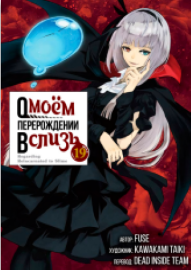

В Моринаке происходит нечто диковинное
для такого маленького, заснеженного городка... убийство.
Мидзуки Аикава является с повинной, утверждая, что это
она убила и расчленила свою одноклассницу — Мако Игараси.
Однако в исповеди преступницы чувствуется что-то неладное...
Сможет ли кто-то разгадать тайну двух девочек, пытавшихся
противостоять тьме этого мира?.. Узнайте в этом настоящем саспенсе!
тыквенная ночь
Изуродованная девушка с
тыквой на голове сбежала из психиатрической больницы
, ведомая жаждой мести к тем, кто издевался над ней в прошлом.
спираль
Курозу — маленький японский городок. По словам Сюити Сайто, друга главной
героини Кириэ Госимы, этот город проклят спиралями. Они видны повсюду — как
в растениях или урагане, так и в людях. Отца Сюити одолевает навязчивая идея,
и постепенно каждый житель города погружается в водоворот событий, из которого невозможно вернуться...

о моем перерождении в слизь
37-летний японец-холостяк был зарезан на улице каким-то мерзавцем-грабителем.
Тут бы и истории конец, да всё обернулось иначе, неожиданно он переродился слизью
в фэнтезийном мире. Но что может сделать, пускай и разумная, но слизь?